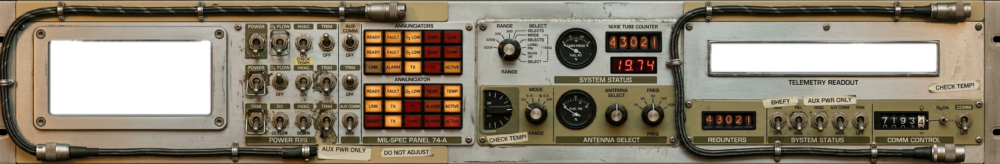

Three ground complexes listen to the solar system in real time, and this deck sings what they hear. Data rate chooses the voice, signal strength sets the loudness, a seventy‑metre dish brings in the octavist an octave below everyone else. The harmony is not invented: every chord comes from two Russian Orthodox choir books, published in 1892 and 1910. If the live feed is ever unreachable, it falls back to 2,788 recorded frames of real traffic — never silence, never anything made up.
Nothing here is improvised by ear: a transcribed 1914 score supplies the harmony, and the sky only ever chooses which of its chords you hear.
Two public domain sources, kept separate rather than pooled. They are close in idiom but eighteen years and one generation apart, and blending them measurably increased the number of contexts with only one possible continuation. Switching here changes which harmony the sky is voiced through.
Anatoly Lyadov's Ten Settings from the Obikhod, Op. 61, harmonisations of Russian Orthodox common chant, published before 1914 and long out of copyright. All 23 pages were transcribed to 941 chords. The page-to-setting boundaries were read off the printed № headings and checked: the per-setting counts sum to exactly 941.
Mode confidence is how many thirds and sevenths the derivation had to vote on. Two settings are marked low: they carry too few to call, and their mode is provisional. Nothing is asserted that the score doesn't support.
Chant has a fixed skeleton: an intonation formula, a reciting tone repeated once per syllable, then a cadence. The sky supplies the syllables: the number of active downlinks sets how long recitation runs. An acquisition or loss cuts the phrase short and forces the cadence early.
An order-2 Markov chain over Lyadov's transitions, encoded as (root interval, chord quality) rather than roman numerals, because functional analysis mangles modal harmony. Telemetry reweights the distribution but is masked to the corpus support: it can only reorder chords Lyadov actually wrote, never invent one. A temperature keeps that nudge from collapsing the chain. At zero the generator reproduces his chord distribution to within a percentage point, which is the regression test.
Data rate picks the part, received power sets the dynamic, the 70 m dishes add the octavist. The ison drone holds the final where it is consonant and steps to the chord root only to avoid a semitone. A fixed drone clashed on 26% of frames.
Choir samples: FluidR3 GM, Frank Wen, MIT licence.
Three ground stations listen to the solar system. Every active radio link becomes a voice in a six-part choir.
| under 40 kb/s | Bass |
| 40 kb/s to 250 kb/s | Tenor |
| 250 kb/s to 800 kb/s | Alto |
| over 800 kb/s | Soprano |
Received power sets how loudly that voice sings. A faint craft is a whisper. The 70 m dishes (DSS 14, 43, 63) bring in the octavist an octave below the bass. The ison is the drone; it holds as long as anything is on the air. A craft running two simultaneous downlinks can land in two voices at once — each link is scored by its own rate, independently, with no link ever aware the other exists.
Choir samples: FluidR3 GM, Frank Wen, MIT licence. Stars: Yale Bright Star Catalog.
Harmony derived from Lyadov, Ten Settings from the Obikhod, Op. 61 (1910), and Arkhangelsky,
Vol. 1 (1892).
Spacecraft photographs: NASA and its centres, public domain; ESA, CC BY-SA 3.0 IGO; Danuri's launch, U.S. Space Force. Photographs of full-size models: Σ64, Gerbil, BugWarp and 江戸村のとくぞう, CC BY 4.0 and CC BY-SA 4.0. Mars Express is ESA's artist's impression, no photograph of it being openly licensed. Every slide and every dossier carries its own credit.
Console artwork generated with Google Gemini; built with Anthropic's Claude.
Privacy — what this site logs and for how long.